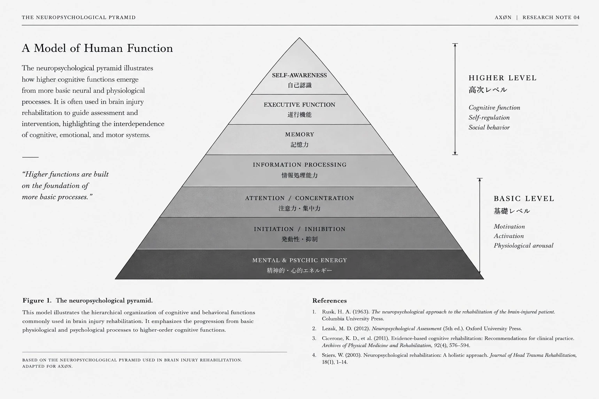
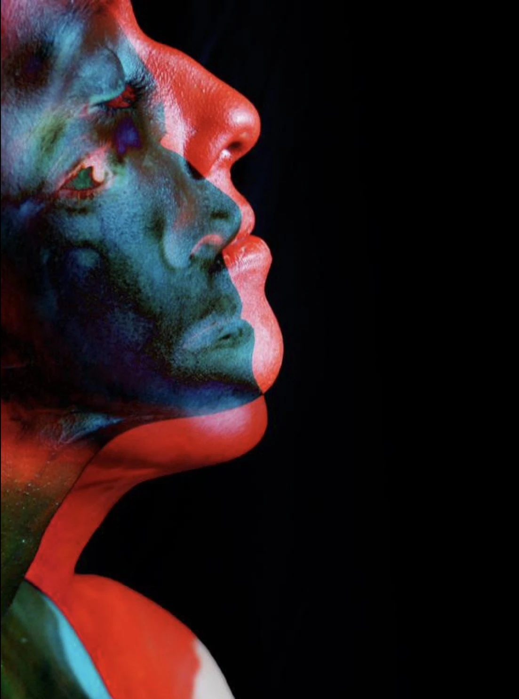
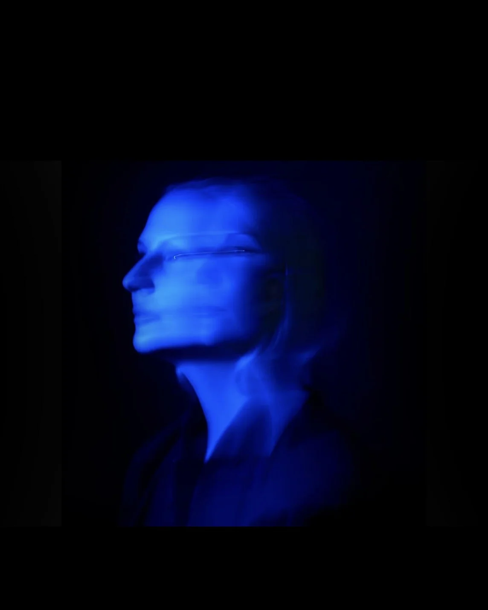

01｜CONNECTION
CONNECTION IS THE BEGINNING.
EVERY MOVEMENT HOLDS A THOUSAND CONNECTIONS.
Nothing exists alone. 何ひとつ、単独では存在しない。
The body is a network of signals, sensations, memories, and responses.
EVERY MOVEMENT BEGINS WITH WHAT WE CANNOT SEE.
02｜CONNECT
CONNECT.
What cannot be seen
can still shape us.
WHAT WE NOTICE SHAPES WHAT WE SEE. 何を見るかで、見えるものは変わる。
Even in the same world, what we pay attention to changes what we take in.
BUT ATTENTION IS NOT ALWAYS CONSCIOUS.
Some things enter us before we consciously notice them. What we repeatedly see, hear, and experience can quietly shape the way we respond.
03｜REPEAT
REPEAT.
What we repeat becomes part of us.
3
WHY THREE?
1 is a beginning. 2 is a connection. 3 is what emerges.
ACTION SHAPES THOUGHT. 行動が、思考を形づくる。
THOUGHT SHAPES ACTION. 思考が、行動を形づくる。
90 / 10
MOST OF WHO WE BECOME IS SHAPED BY THE EVERYDAY.
90 — DAILY LIFE / DAILY ACTION
10 — WHAT WE ENCOUNTER
90 + 10 = 100
ALL OF IT SHAPES US.
INVISIBLE THINGS SHAPE US.
04｜ADAPT
ADAPT.
CHANGE BEGINS BENEATH THE SURFACE. 変化は、見えない土台から始まる。

THE NEUROPSYCHOLOGICAL PYRAMID
A model of human function.
BUT WHAT DOES IT MEAN TO US?
We are shaped by what we experience. What we notice. What we repeat. What we adapt to.
What we wear also shapes how we experience everyday life. 身につけるものも、日々の経験を形づくっていく。
05｜BECOME
BECOME.


MORE THAN WHAT YOU SEE.
Identity exists beyond the visible. やがて、私たちの形になる。
FROM WITHIN, WE BECOME. 内側から、私たちは形づくられていく。
06｜BRAND
BRAND.
WHAT REMAINS
Experience leaves its mark on the body, shaping us in ways we cannot see.
WHAT WE WEAR
What we wear, too, becomes part of us through everyday contact with the body.
WHAT WE BECOME
Invisible connections shape who we become.
AXØn
Recovery × Identity.
Not just fashion.